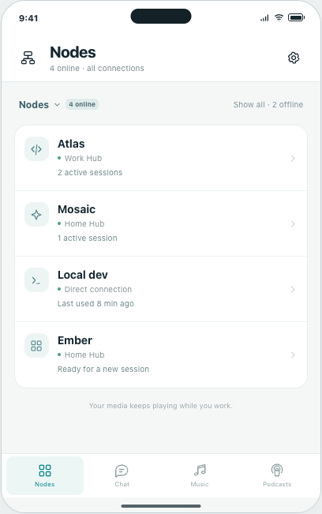
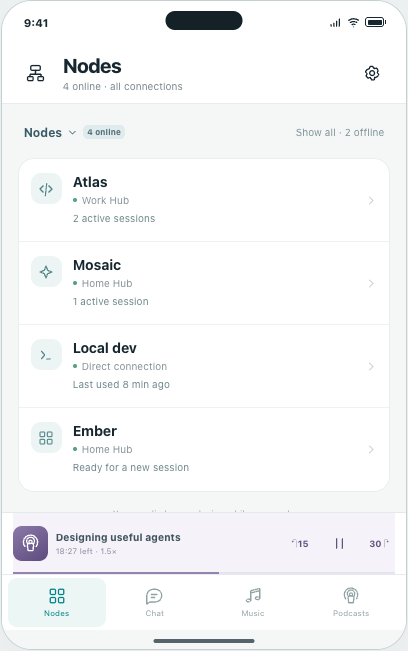
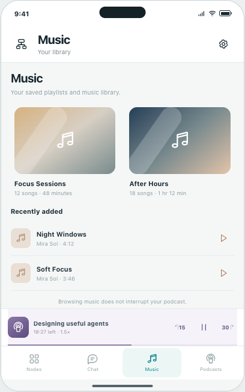
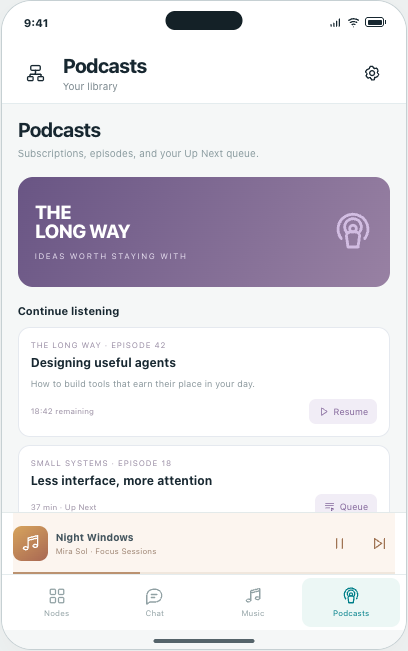

01
Nodes, nothing playing
The mini player is absent.
Nodes gets the space back. Music and Podcasts remain directly reachable.
Four destinations, one retained chat, and independent audio state. Music and Podcasts are first-class libraries—not two new icons in a Hub-only header.

Nodes gets the space back. Music and Podcasts remain directly reachable.

Pause or skip from Nodes. Tap the episode to open the full player, speed, and queue.

Opening playlists does not stop the episode. Pressing Play on a track asks to switch playback.

The mini player still shows the song, with track controls—not podcast skip buttons.